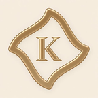

Native mobil uygulamalar, backend servisleri ve akademik veri platformları geliştiriyorum; Klaris, Hocam Kim? ve TRBio bunlardan bazıları. İstanbul Teknik Üniversitesi Bilgisayar Mühendisliği mezunuyum.
Bilimetri, akademik veri ve araştırma bilgi sistemleri üzerine araştırmaya; yazılım, veri ve yapay zekâ mühendisliği rollerine ilgi duyuyorum.
Uçtan uca tasarlayıp geliştirdiğim ve yönettiğim ürünler.

Klaris
Kurucu ve Yazılım Mühendisi · Mart 2026 – Günümüz · klaris.com.tr
1,5 Milyon+ ÜrüniOS ve Android16.000+ Test
Türkiye pazarı için kozmetik içerik analizi uygulaması; Eylül 2026'dan beri App Store ve Google Play'de yayında.
Uygulamayı tek başıma tasarlayıp geliştirdim ve yayına aldım; içerikleri sade Türkçeyle açıklıyor ve her ürün puanının gerekçesini gösteriyor.
Uygulama içi abonelik içeren native iOS (Swift, SwiftUI, StoreKit) ve Android (Kotlin, Jetpack Compose, Google Play Billing, ML Kit ile barkod okuma) uygulamalarını geliştirdim.
1,5 milyondan fazla ürünlük kataloğun arkasındaki Python veri hattını ve FastAPI, PostgreSQL ve Redis tabanlı backend'i kurdum; içerik normalizasyonu ve otomatik kalite kapıları ekledim. Sistemi Docker, Nginx ve CI/CD ile kendi yönettiğim bir Linux sunucuda çalıştırıyorum.
Microsoft for Startups (Azure kredisi) ve OVHcloud Startup Program (10.000 EUR kredi) tarafından destekleniyor; dış yatırım almadan öz kaynakla büyüyor.
Kurucu ve Yazılım Mühendisi · Bağımsız ve Kamuya Açık Proje · Ekim 2026 – Günümüz · hocamkim.com
200.000+ Akademisyen4,9 Milyon Yayın235 Kurum
Türkiye'deki akademisyenler için ücretsiz ve şeffaf bir rehber ve alan içi sıralama.
235 kurumda ve 2.370 alt alanda 200.000'den fazla akademisyeni kapsayan, yaklaşık 4,9 milyon tekilleştirilmiş yayının Meilisearch ile aranabildiği kamuya açık bir rehber geliştirdim.
Sekiz bileşenli, sürümlü ve açık bir puanlama yöntemi tasarladım; bileşenler arasında SCImago Journal Rank (SJR) çeyreğiyle ağırlıklandırılmış yayınlar, atıf yüzdelikleri, fonlu projeler, tez danışmanlıkları, uluslararası iş birlikleri ve patentler var. Puanlar her gün yeniden hesaplanıyor ve her akademisyen kendi alanında karşılaştırılıyor.
Bu akademisyenlerin 111.000'den fazlasını ORCID ve ortak DOI'ler üzerinden OpenAlex yazar kayıtlarıyla eşleştirdim. Teknolojiler: Python, FastAPI, Jinja2, MongoDB, Meilisearch, Cloudflare Tunnel; 7.600'den fazla otomatik test.
Kurucu Ortak ve Yazılım Mühendisi · Eylül 2025 – Günümüz · trbio.info
264 Araştırmacı99 ÜniversiteGönderilen 2 Makale
İTÜ bitirme projesi: Türkiye biyoinformatik araştırma topluluğunun küratörlü bilgi tabanı; Naya Şahin ile birlikte, Doç. Dr. Ali Çakmak danışmanlığında.
Ulusal akademik kayıtları katı, ORCID tabanlı eşleştirmeyle OpenAlex'e bağlayan kimlik eşleştirme, ana veri, puanlama ve portal katmanlarını geliştirdim (Python, FastAPI, MongoDB, D3.js).
99 üniversiteden 264 araştırmacıyı, yerel bir LLM (Ollama) ile etiketlenen 21 küratörlü araştırma alanında topladım; ortak yazarlık ağı ve 2020 sonrasında kurulan iş birlikleri üzerinde geriye dönük doğrulamada ROC-AUC 0,77'ye ulaşan bir iş birliği öneri sistemi geliştirdim.
Briefings in Bioinformatics ve Database dergilerine gönderilen (Kasım 2026) iki makalenin ilk yazarıyım.
Akademik Veriler için Veri Madenciliği ve Doğal Dil İşleme
Araştırma Bilgi Sistemleri ve Açık Araştırma Verisi
Gönderilen Makaleler
Mapping Bioinformatics in Türkiye: A Network-Based Review of Researchers, Institutions, and Research ThemesKoç, M. E., & Çakmak, A.Gönderildi · Kasım 2026Dergi: Briefings in Bioinformatics
TRBio: A Curated Knowledge Base and Network Resource for the Bioinformatics Research Community in TürkiyeKoç, M. E., & Çakmak, A.Gönderildi · Kasım 2026Dergi: Database (Oxford)
Veri ve Kod
TRBio 1.0: iki makalenin kimliksizleştirilmiş ortak yazarlık ağı, toplu sonuçları ve analiz kodu.
Kuveyt Türk Katılım Bankası · Teftiş Kurulu · Bilgi Sistemleri Denetimleri · Kocaeli
Erişim yönetimi, değişiklik yönetimi, yedekleme ve iş sürekliliği gibi BT genel kontrollerini BDDK bilgi sistemleri mevzuatına ve KVKK'ya göre denetledim; bulguları kriter, kanıt, neden ve etki yapısında raporladım.
Türkiye'nin önde gelen 10 bankasının mobil bankacılık uygulamalarını beş başlıkta (mağaza puanları ve sürümler, ilk kullanım, giriş güvenliği, müşteri edinimi, para transferi) karşılaştıran 26 sayfalık bir denetim raporu hazırladım.
Şubeler, ATM'ler, web ve mobil kanallar, çağrı merkezi ve yönetişim için erişilebilirlik mevzuatına uyumu ölçen, risk dereceli ve 20'den fazla testten oluşan bir denetim programı tasarladım.
Aralık 2024 – Haziran 2026
Yapay Zekâ Eğitmeni (Kodlama) · Serbest
Outlier · Uzaktan
Büyük dil modellerinin eğitimi için Python, C/C++ ve JavaScript/TypeScript'te zorlayıcı kodlama görevleri ve örnek çözümler yazdım; model cevaplarını doğruluk ve kaliteye göre puanlayıp sıraladım (RLHF).
Kalite kontrol rolünde diğer katkıcıların çalışmalarını inceleyip onayladım.
Ağustos – Eylül 2023
Yazılım Stajyeri
Arçelik · Dijital Üretim Sistemleri · Bolu Pişirici Cihazlar Fabrikası · Bolu
Fabrika test verilerinin Excel'de takibinin yerini alması için full-stack bir web uygulaması (React, Node.js/Express, PostgreSQL) geliştirdim; backend ve frontend dahil baştan sona.
Temmuz 2023
Ağ ve Donanım Stajyeri
T.C. Gençlik ve Spor Bakanlığı · Bilgi İşlem Dairesi · Ağ Yönetimi Şube Müdürlüğü · Ankara
Cisco router ve switch'lerin kurulumunu ve yapılandırmasını (IP adresleme, alt ağlar, güvenlik ayarları) kabin montajı ve kablolamayla birlikte yaptım; ağı kablo test cihazları ve Wireshark ile test edip arızaları giderdim.
Eğitim
Bilgisayar Mühendisliği, Lisans (%100 İngilizce)
İstanbul Teknik Üniversitesi
Bitirme projesi: TRBio, Biyoinformatik Topluluk Portalı; danışman Doç. Dr. Ali Çakmak
Lisans boyunca Kale Vakfı (KSV) bursiyeri
İşletme, Lisans
Anadolu Üniversitesi, İşletme Fakültesi
Onur Derecesiyle Mezuniyet
Yaz İngilizce Programı· George Mason University
Ders Projeleri
LLM ile Kod ve Test Üretimi
BLG 475E Software Quality and Testing
30 HumanEval-X görevinde LLM'in ürettiği Java kodunu ve birim testlerini değerlendiren hattı kurdum: yerel llama.cpp çıkarımı, JUnit adaptörleri, JaCoCo dal kapsamı ve GitHub Actions üzerinde PITest mutasyon testi (iki kişilik ekip).
40 Wikipedia makalesi üzerinde tamamen yerelde çalışan RAG asistanı: cümle duyarlı parçalama, yerel embedding'ler, SQLite ve ChromaDB, Ollama üzerinden Llama 3.2 ve Streamlit sohbet arayüzü.
İndeksleme sürerken arama yapılabilen, standart kütüphaneyle yazılmış Python web tarama aracı: derinlik sınırlı tarama, tekrar önleme, geri basınç kontrolü, kaldığı yerden devam eden SQLite (WAL) kuyruğu ve yerel kontrol paneli.
Flask ve MySQL tabanlı analitik uygulaması; 126 MB'lık ticaret verisini dokuz tabloluk şemaya yükleyen akış tabanlı ETL'i, yönetim panelini ve rota gezginini geliştirdim (beş kişilik ekip).